Rebuilding a real ironing recording in 3D
Orbifold real-to-sim hackathon. Results, method, scores and known flaws.
1. The challenge
I was given one real recording of a person ironing clothes on a bed. The task was to rebuild it as a 3D scene (cameras, room, person with hands, and the iron) and render that scene from the same cameras so the result is hard to tell apart from the footage. The recording is a 57.6 s MCAP file with three cameras: one head camera and two tripod cameras (the brief said three tripod cameras). Each is 1920×1080 at 30 fps, and the file includes 3D tracking of 62 body and hand joints. I render the first 2 s. Entries are judged on Realism, Fidelity, Physics and Honesty.
2. Results
Each video shows the original on the left and my render on the right. The rows are the head camera, tripod camera 1 (exocam1) and tripod camera 2 (exocam2). Each clip is 2 s (60 frames) at full resolution, so open it full-screen to see detail.
Track A: person and iron learned from the footage
Rows: headcam, exocam1, exocam2. Crisp outline: person and room blended at her silhouette, steadier edges, sharper head-camera room. Download full resolution (3840×3240)
Track B: fully modelled CG person and iron
Rows: headcam, exocam1, exocam2. v2: CG iron, eyelashes hidden in the headcam, legs no longer cut by the bed, triangular front hem, buttons. Every 2nd frame at real-time speed. Download full resolution (3840×3240)
3. How each track works
Every pixel in my video is rendered from a 3D scene. The real footage is used only to fit and train the 3D models and to score the results; no footage pixels are copied into the output, and no filters or video models are applied. Steps 1–6 are the same in both tracks.
Track A: learned from the footage, step by step
| # | Step | Method | Code | What it does exactly |
|---|---|---|---|---|
| 1 | Read the recording | MCAP decoding of zstd-compressed protobuf messages | scripts/01_inspect.pyscripts/02_extract.py | Extracts the 60 clip frames per camera (out/clip/frames/<cam>/), the lens intrinsics K, the head camera's per-frame pose T_world_cam and the 62 tracked joints xyz (F×62×3). |
| 2 | Calibrate the cameras | Multi-view Perspective-n-Point (PnP), RANSAC + Levenberg–Marquardt | scripts/01b_calibrate.py | One fixed pose per tripod camera, solved with cv2.solvePnPRansac + solvePnPRefineLM over the joints of the whole 57 s recording. The head camera keeps its recorded per-frame pose. Writes out/calib/static_cams.npz. |
| 3 | Detect 2D keypoints | 2D human pose estimation (YOLO pose) | scripts/03a_detect_2d.py | COCO-17 keypoints on every frame of exocam1 and exocam2. |
| 4 | Fit the body | Parametric body model fitting (Anny, 104 bones) | scripts/03b_fit_body.py | PyTorch optimisation. Per frame: every bone's rotation and the root position. Shared over the clip: body shape. Loss = 3D joint distance + 2D keypoint reprojection + temporal smoothness + a pose prior. Writes out/body/fit.npz; mean joint error 1.2 cm. |
| 5 | Build the room | 3D Gaussian Splatting, with per-camera colour and per-image exposure modelling | scripts/07_room_data.pyscripts/08_train_room.pyscripts/09_render_room.py | Trains a gsplat model on frames with the person masked out (YOLO segmentation ∪ the projected skeleton). Learns a pose correction per head-camera image, a 3×3 colour matrix + bias per camera, and an exposure gain per image. Renders at full 1920×1080. |
| 6 | Sharpen the head-camera room | BARF-style coarse-to-fine pose refinement + MCMC densification | scripts/08b_train_room_sharp.pyscripts/09c_render_room_sharp.py | Fine-tunes the room for the head camera: poses are learned from step 0, the first steps run at half resolution, up to 2M Gaussians, and the blurriest 25% of frames are dropped. |
| 7 | Trace the person | Instance segmentation (YOLO11x-seg) | scripts/30_human_gs_masks.py | Keeps the person instances that overlap the projected body mesh. The upside-down head camera is segmented both as-is and rotated 180°, and the two are merged. Writes out/assets/human_gs/masks/. |
| 8 | Build the person model | Mesh-anchored 3D Gaussian avatar with a temporal DCT residual basis | scripts/30_human_gs_common.py | About 86k Gaussians anchored by barycentric coordinates on the body, tunic and trouser triangles. Each has a learnable offset in its triangle's frame, a smooth per-frame residual (DCT basis), degree-1 spherical-harmonic colour, opacity, scale and rotation. |
| 9 | Train the person | Differentiable rendering with an L1 + SSIM photometric loss | scripts/30_human_gs_train.py | Trained on the original full-resolution frames of all 3 cameras with 0.8·L1 + 0.2·(1−SSIM) inside the person mask, plus coverage, offset and anisotropy regularisers. Checked on held-out frames (LPIPS 0.07 in the tripod views). |
| 10 | Clean the person render | Gaussian shape reshaping + temporal median of the silhouette | scripts/32_human_gs_clean_render.py | Needle Gaussians (longest axis > 5× the middle axis) are cut to 3×, flat discs get a minimum thickness, and the person's alpha takes a 3-frame median. |
| 11 | Trace the iron | Promptable video segmentation (SAM 2.1) | scripts/20_iron_masks.py | Each mask is prompted by a box around the projected 3D iron, points on its aqua pixels, and the hand as a negative point. |
| 12 | Fit the iron's pose | Multi-view silhouette-based 6-DoF pose estimation | scripts/20_iron_fit.py | Per frame: x, y, yaw and lift, with the soleplate kept flat on the bed. Fitted to the traced masks with the hand ignored. Writes out/assets/iron/poses.npz. |
| 13 | Colour the iron | Texture baking from multi-view observations | scripts/20_iron_layer.py | Each face gets the median of its visible pixels over 3 cameras × 60 frames. Renders an RGBA + depth layer. |
| 14 | Assemble | Depth-tested alpha compositing | scripts/14_composite_layers.py | Person and iron are depth-tested per pixel (fingers in front of the handle, iron in front of the body), then layered over the room with a soft blend at the silhouette. |
| 15 | Score and make the video | PSNR, SSIM, LPIPS, silhouette IoU, ring error, sharpness | scripts/11_metrics.pyscripts/16_eval_trackA.pyscripts/13_progress_video.py | Scores every frame against the real footage, then writes ORIGINAL | MINE at full resolution, H.264 CRF 14. |
Track B: fully modelled CG, step by step
| # | Step | Method | Code | What it does exactly |
|---|---|---|---|---|
| 1 | Read the recording | MCAP decoding of zstd-compressed protobuf messages | scripts/01_inspect.pyscripts/02_extract.py | Extracts the 60 clip frames per camera (out/clip/frames/<cam>/), the lens intrinsics K, the head camera's per-frame pose T_world_cam and the 62 tracked joints xyz (F×62×3). |
| 2 | Calibrate the cameras | Multi-view Perspective-n-Point (PnP), RANSAC + Levenberg–Marquardt | scripts/01b_calibrate.py | One fixed pose per tripod camera, solved with cv2.solvePnPRansac + solvePnPRefineLM over the joints of the whole 57 s recording. The head camera keeps its recorded per-frame pose. Writes out/calib/static_cams.npz. |
| 3 | Detect 2D keypoints | 2D human pose estimation (YOLO pose) | scripts/03a_detect_2d.py | COCO-17 keypoints on every frame of exocam1 and exocam2. |
| 4 | Fit the body | Parametric body model fitting (Anny, 104 bones) | scripts/03b_fit_body.py | PyTorch optimisation. Per frame: every bone's rotation and the root position. Shared over the clip: body shape. Loss = 3D joint distance + 2D keypoint reprojection + temporal smoothness + a pose prior. Writes out/body/fit.npz; mean joint error 1.2 cm. |
| 5 | Build the room | 3D Gaussian Splatting, with per-camera colour and per-image exposure modelling | scripts/07_room_data.pyscripts/08_train_room.pyscripts/09_render_room.py | Trains a gsplat model on frames with the person masked out (YOLO segmentation ∪ the projected skeleton). Learns a pose correction per head-camera image, a 3×3 colour matrix + bias per camera, and an exposure gain per image. Renders at full 1920×1080. |
| 6 | Sharpen the head-camera room | BARF-style coarse-to-fine pose refinement + MCMC densification | scripts/08b_train_room_sharp.pyscripts/09c_render_room_sharp.py | Fine-tunes the room for the head camera: poses are learned from step 0, the first steps run at half resolution, up to 2M Gaussians, and the blurriest 25% of frames are dropped. |
| 7 | Colours | Closed-loop albedo calibration | scripts/03c_sample_colors.pyscripts/03d_calibrate_albedo.py | Measures the median real colour of each garment region (visible faces only), then scales the material albedo by real/rendered in linear light. Render, measure, repeat. Writes out/body/albedo.json. |
| 8 | Clothes | Procedural garment modelling from the body surface + Taubin boundary smoothing | scripts/03e_garments.py | The tunic and wide trousers are cut from the Anny surface and pushed out along each frame's normals, flaring to the hems. The back hangs straight. There is a V opening with five button anchors, and the sleeve openings are snapped to clean cuff planes. Pin weights drive the cloth sim. |
| 9 | Cloth motion | Physically based cloth simulation (Blender Cloth) | scripts/04_build_scene.py | The garments are simulated over the 60 frames, pinned at the shoulders and waist and free at the hems. |
| 10 | Body, skin and hair | Shape-key animation + CC0 PBR skin textures | scripts/04_build_scene.py | The fitted Anny body is animated with per-frame shape keys, given a MakeHuman CC0 skin, and given modelled hair. |
| 11 | Trim and buttons | Procedural shader masking | scripts/04_build_scene.py | The brown cuff, placket and pocket bands are smooth shader masks (trim_mask()). The buttons are pinned to the garment's vertices. |
| 12 | Iron | Hard-surface 3D modelling | src/orbifold/cg_iron.py | build_iron() builds a turquoise and white shell, window, dial and cord, keyframed from the per-frame iron pose. |
| 13 | Render | Physically based path tracing (Blender Cycles, OptiX) | scripts/05_render.py | Full 1920×1080, a 1.0 px Blackman-Harris filter, the Standard view transform, no motion blur or depth of field, and a transparent film with a shadow catcher on the bed. In the head camera the head, hair, collar and buttons are hidden. |
| 14 | Assemble | Alpha compositing over the room | scripts/06_compare.py | The CG person, the iron and their shadows are layered over the same room render. |
| 15 | Score and make the video | PSNR, SSIM, LPIPS, silhouette IoU, sharpness | scripts/11_metrics.pyscripts/13_progress_video.py | Scores every frame against the real footage, then writes ORIGINAL | MINE at full resolution. |
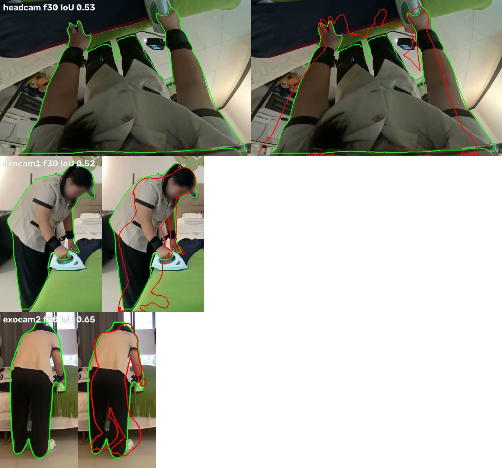
Step 4, body alignment check: the outline of the fitted body drawn over the real frames.
Main tools: mcap, OpenCV, PyTorch, YOLO (Ultralytics), SAM 2.1, gsplat, Anny, Blender 5.2 / Cycles (bpy), LPIPS, FFmpeg, uv.
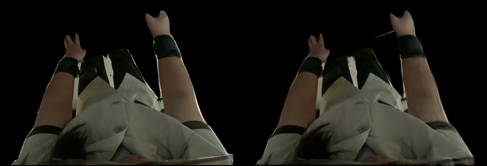
Track A: the learned person cut-out (Gaussians on the body mesh) next to the original, after 10k training steps.
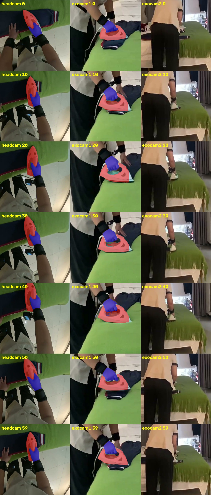
Track A: traced iron masks used to fit the iron's pose on each frame.
The hand-modelled CG iron (Track B)
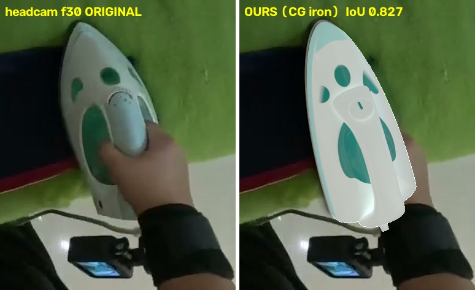
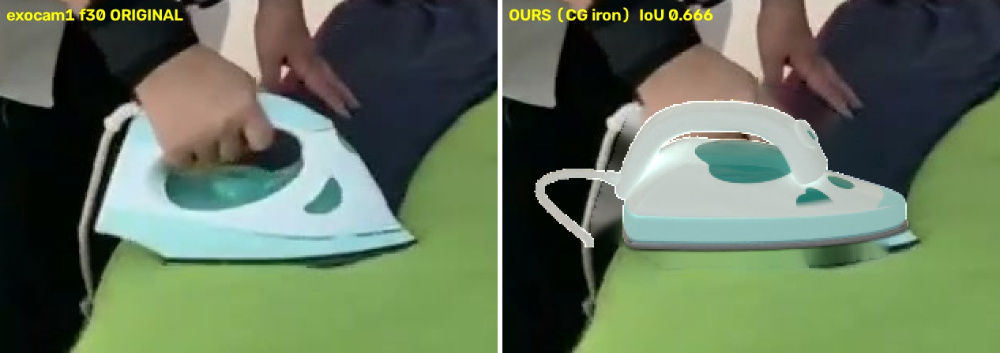
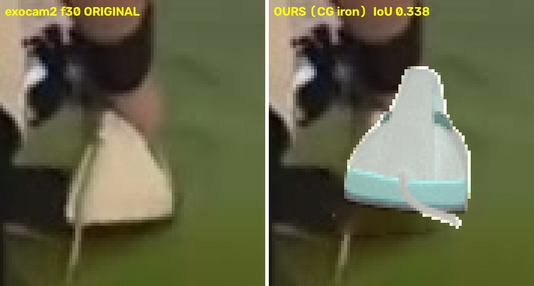
Head camera, exocam1, exocam2. Built from scratch in Blender to match the real iron's shape and colours.
4. Scores
Track A numbers, per camera. Person scores are on held-out frames (not used for training). Higher is better except LPIPS, which measures perceptual difference (0 means identical).
| Measure | Headcam | Exocam1 | Exocam2 |
|---|---|---|---|
| Person LPIPS (lower is better) | 0.13 | 0.066 | 0.067 |
| Person PSNR | 25.4 dB | 25.9 dB | 27.1 dB |
| Person silhouette IoU | 0.94 | 0.86 | 0.88 |
| Iron silhouette IoU | 0.82 | 0.76 | 0.42 |
| Whole-frame sharpness (ratio to original) | 0.87 | 0.80 | 0.74 |
Track B: CG iron silhouette IoU 0.83 in the head camera. Body joint fit error: 1.2 cm (both tracks). IoU is the overlap between my outline and the real outline (1.0 = perfect).
5. How it meets the brief
| Criterion | What I did | Where it falls short |
|---|---|---|
| Realism Partly |
The room looks photographic in the tripod views. The Track A person is learned from real pixels, so the skin, clothing folds and lighting look real. Track B is sharp and fully modelled. | Track A has some streaks near the hands and a soft outline. Track B's person still looks CG. The head-camera background is soft. |
| Fidelity Mostly |
Each frame uses that frame's tracked pose at 30 fps, so timing matches by construction. Recorded camera lenses, solved tripod poses, 1.2 cm joint error, high silhouette overlap. | Only 2 s of the 57.6 s are rendered. The exocam2 iron overlap is low (0.42). |
| Physics Partly |
The body follows the real tracked motion, the iron stays flat on the bed under the right hand, and nothing floats free. | The hand passes into the iron, because the tracked palm is about 2 cm below where the iron appears in the images. There is no simulated grip, and the ironed cloth does not move. |
| Honesty Yes |
All code is in scripts/ and src/, flaws are listed here and in SCORECARD.md, and the scores of every round are kept. |
The full pipeline has not been rerun from a fresh clone in one go. GPU stages need CUDA. |
| The one rule Yes, with a disclosure |
Every output pixel is rendered from 3D (Gaussian splats or Cycles meshes) and then layered. No footage pixels, filters or video models are used. | See the note below. |
6. Known flaws and next steps
Track A
- Some streaks near the hands.
- A soft outline around the person.
- The head-camera background is softer than the original.
- The hand intersects the iron: the tracked palm sits about 2 cm below the iron seen in the images.
Next: finish the full-resolution room retrain for the head camera; raise the iron to match the images or correct the palm offset; train longer with more views near the hands.
Track B (from user feedback)
- The shirt colour is not matched per camera.
- The hair should hang loose to the side, not sit in a bun.
- The person overall still looks CG.
- The clothing texture is flat.
Next: match the shirt colour per camera, restyle the hair, add fabric texture and wrinkles, and improve skin shading.
Both tracks
- Only 2 s of the recording is rendered.
- The trousers being ironed are part of the static room, so they do not move when ironed.
- No contact physics: the iron follows the hand rather than being gripped.
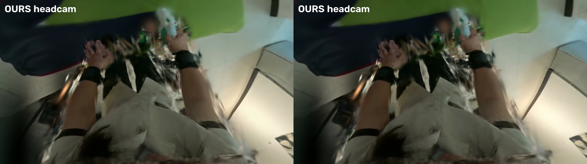
Head camera, before and after the sharper room model. The background is better but still softer than the original.
7. Iteration history
Each round, original left and mine right. "Error" is the mean absolute pixel difference on a 0–255 scale (headcam / exocam1 / exocam2; lower is better). Lower error does not always mean more realistic.
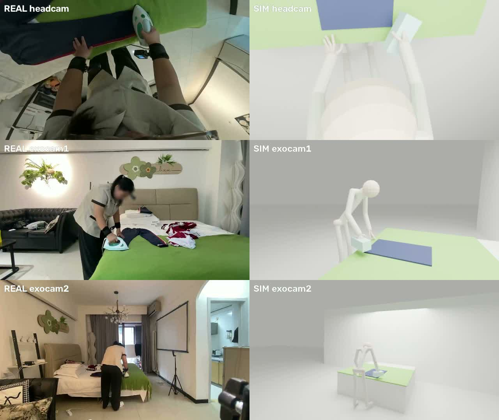
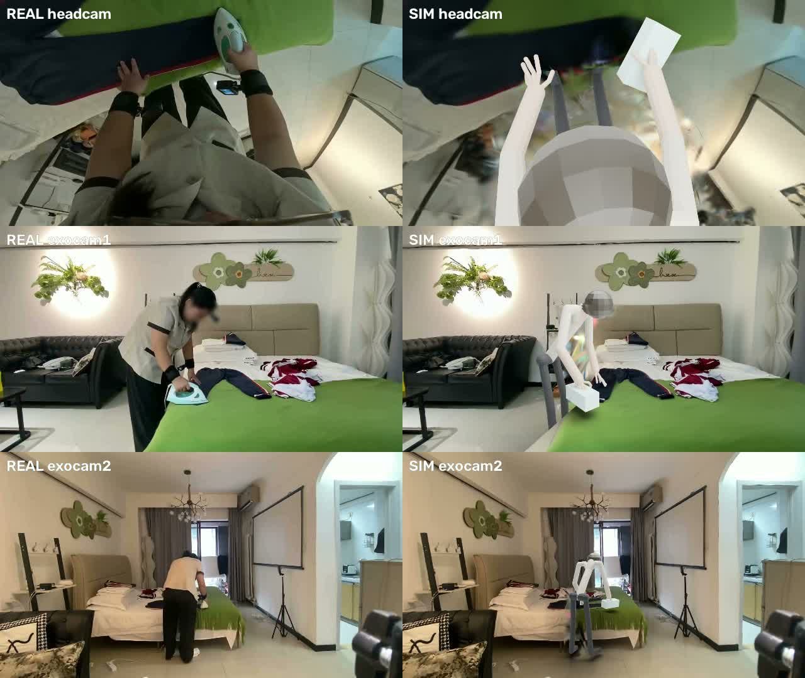
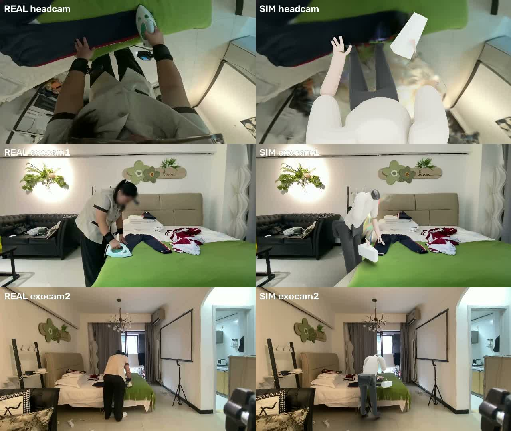
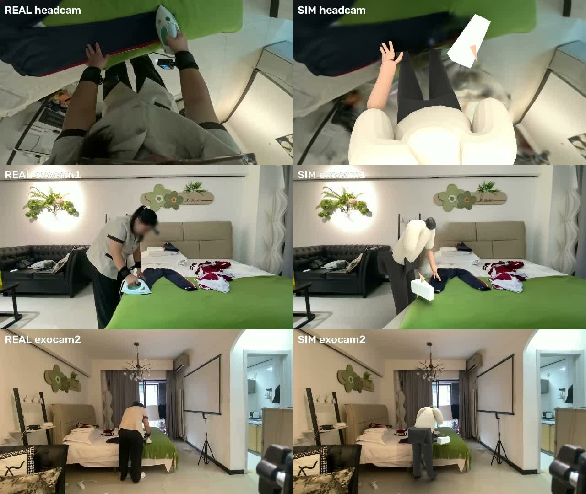
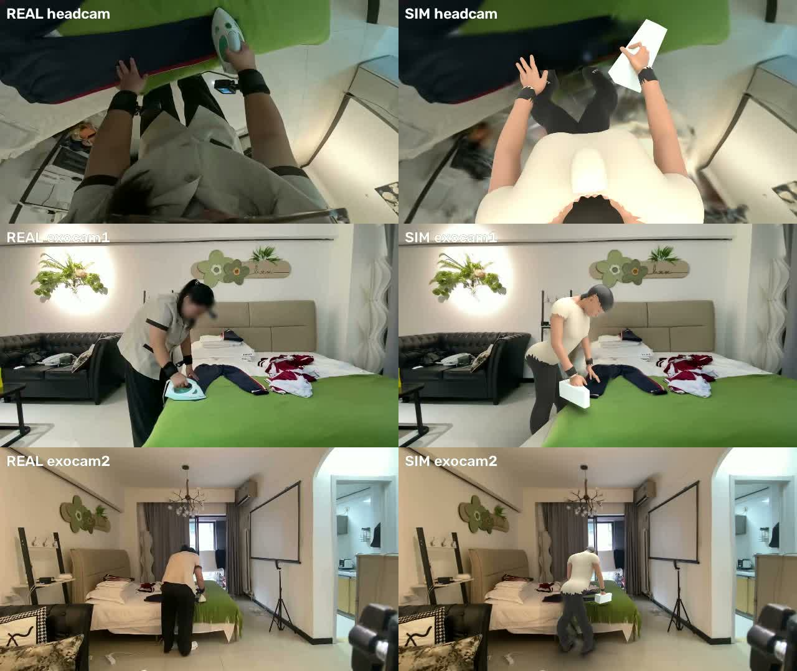
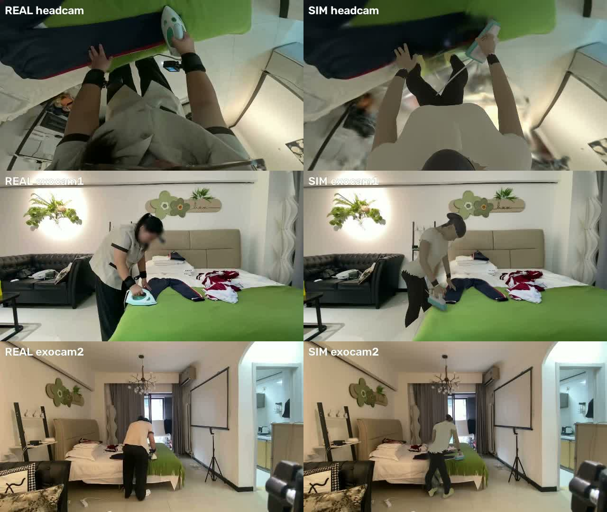
After round 5 the work split into Track A (learned person and iron) and Track B (CG person and iron), shown at the top of this page.